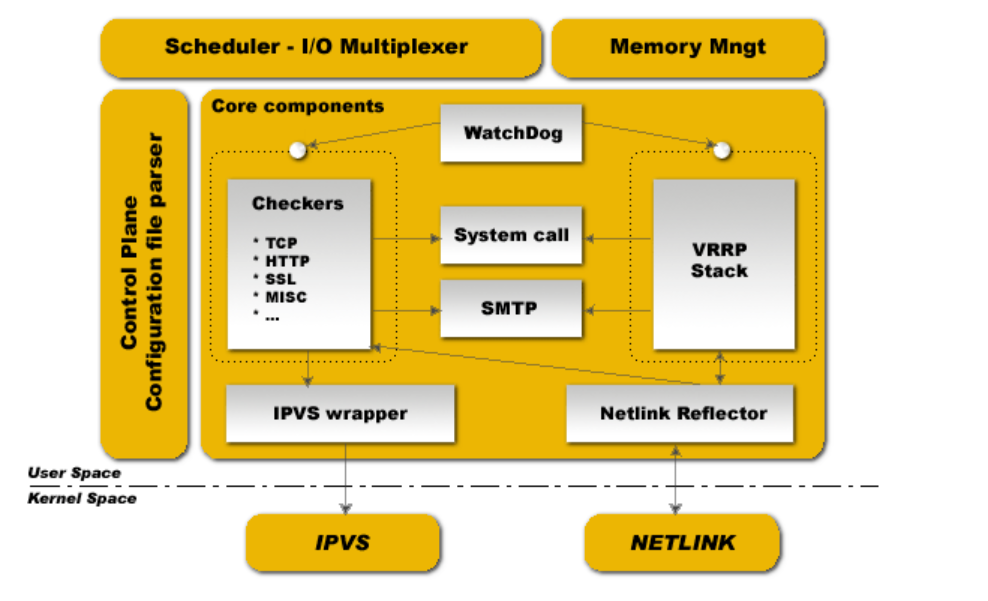
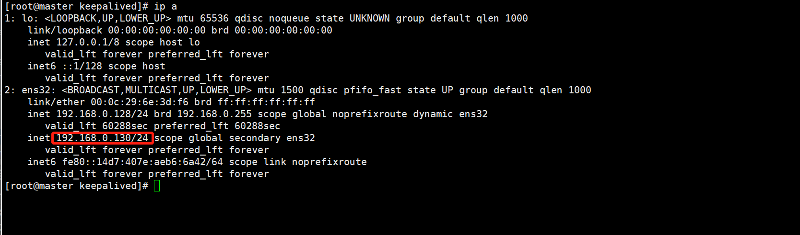

Contents
4.2. 02.Keepalived加双主架构¶
keepalived使用vip，利用keepalived自带的服务监控和自定义脚本实现mysql故障时自动切换
4.2.1. Keepalived¶
keepalived是基于vrrp协议的，虚拟冗余路由协议。master会向backup节点发送广播信号，当backup节点接收不到master发送的vrrp包时，会认为master宕机，这时会根据vrrp的优先级选举一个backup充当master，该master会持有vip，而vip是对处应用连接的ip，从而保证业务的正常运行
优先级，用1<254表示，数字越小优先级超低。当值为0时，表示放弃持有vip，值为255时，当前master优先级最高并持有vip
vrid，虚拟路由标识，同组机器内vrid必须一致，通常用0~255标识
官网：http://www.keepalived.org/
当前最新版本：http://www.keepalived.org/software/keepalived-2.0.5.tar.gz
keepalived启动后，会有watch dog、vrrp、health-check三个进程，watch dog负责监控vrrp和health-check进程，vrrp负责当master不可用时通过vrrp切换到backup服务器，health-check检测服务器健康状态 
keepalived启动后，会有watch dog、vrrp、health-check三个进程，
watch dog负责监控vrrp和health-check进程，
vrrp负责当master不可用时通过vrrp切换到backup服务器，
health-check检测服务器健康状态。
4.2.2. 集群搭建思路¶
搭建思路：
1）需要两台MySQL服务器，互为主从，都可读写。一台负责写入，一台充当备用
2）安装Keepalived软件，yum的就可以
3）整理好Keepalivd配置文件，理清Keepalived三种状态；准备监控MySQL的脚本，便于检测到宕机，从而进行切换
4）两台机器的state都采用backup，且都是nopreempt非抢占模式，避免出现冲突和发生脑裂
注意事项：
1）切换机制要合理，避免切换不成功的现象发生
2）从库配置尽量与主库一致，性能不能太差，避免切换后的新主库影响线上业务
3）延迟问题，可以使用PXC完成实时同步功能，基本上可以实现没有延迟
4）Keepalived无法解决脑裂问题，因此在进行服务异常判断时，可以修改判断脚本，通过第三方节点补充检测来决定是否进行切换，可降低发生脑裂、冲突现象
5）设置节点状态时，都设置成backup状态且非抢占模式，通过优先级决定谁是主库，避免脑裂和冲突
6）云平台环境上，此架构可能不能搭建，因为VRRP协议可能被禁用
一般中小型公司都使用这种架构，搭建比较方便简单：可以采用主从或者主主模式，在master节点发生故障后，利用Keepalived高可用机制实现 快速切换到slave节点，原来的从库变成新的主库。
4.2.3. 集群部署¶
结构：
192.168.0.128 主masterA
192.168.0.129 备masterB
192.168.0.130/24 VIP
gtid+row模式
部署过程：
第一步，分别在主备上创建同步复制帐号¶
grant replication slave on *.* to 'repl'@'192.168.0.%' identified by '123456';
flush privileges;
第二步，搭建双主¶
192.168.0.128上执行
change master to
master_host='192.168.0.129',
master_user='repl',
master_password='123456',
master_auto_position=1;
192.168.0.129上执行
change master to
master_host='192.168.0.128',
master_user='repl',
master_password='123456',
master_auto_position=1;
在主备上执行
start slave;
show slave status\G;
查看主从同步状态 GTID+row模式
主机上
mysql> show slave status\G;
*************************** 1. row ***************************
Slave_IO_State: Waiting for master to send event
Master_Host: 192.168.0.129
Master_User: repl
Master_Port: 3306
Connect_Retry: 60
Master_Log_File: mysql-bin.000001
Read_Master_Log_Pos: 151
Relay_Log_File: master-relay-bin.000002
Relay_Log_Pos: 361
Relay_Master_Log_File: mysql-bin.000001
Slave_IO_Running: Yes
Slave_SQL_Running: Yes
备机上
mysql> show slave status\G;
*************************** 1. row ***************************
Slave_IO_State: Waiting for master to send event
Master_Host: 192.168.0.128
Master_User: repl
Master_Port: 3306
Connect_Retry: 60
Master_Log_File: on.000001
Read_Master_Log_Pos: 151
Relay_Log_File: slave-relay-bin.000002
Relay_Log_Pos: 347
Relay_Master_Log_File: on.000001
Slave_IO_Running: Yes
Slave_SQL_Running: Yes
第三步，在两台机器上安装keepalived软件¶
相关参考：http://pdf.us/2018/06/12/1311.html
主备机操作如下：
yum -y install keepalived
[root@master mysql]# rpm -qa|grep keepalived
keepalived-1.3.5-16.el7.x86_64
systemctl start keepalived
systemctl status keepalived
第四步，配置检测MySQL的脚本¶
通过判断MySQL服务是否宕机，确定停止Keepalived服务进行切换操作 cat /etc/keepalived/checkmysql.sh
#!/bin/bash
mysqlstr=/usr/local/mysql/bin/mysql
# 注意主备检查脚本中ip不能相同 主为VIP 备为自已的ip
host=192.168.0.130
#host=192.168.10.129
user=healthcheck
password=check123
port=3306
##MySQL服务状态正常为1 否则为0
mysql_status=1
###check mysql status###
$mysqlstr -h $host -u$user -p$password -P $port -e "show status;" >/dev/null 2>&1
if [ $? = 0 ] ;then
echo "mysql_status=1"
exit 0
else
#/etc/init.d/keepalived stop
systemctl stop keepalived
fi
#不需要授任何权限，仅需执行show status命令
create user 'healthcheck'@'192.168.0.%' identified by 'check123';
flush privileges;
chmod +x /etc/keepalived/checkmysql.sh
第五步，修改Keepalive配置文件¶
主机 cat /etc/keepalived/keepalived.conf
! Configuration File for keepalived
global_defs {
notification_email {
root@localhost
}
notification_email_from keepalived@localhost
smtp_server 127.0.0.1
smtp_connect_timeout 30
script_user root
enable_script_security
route_id mysql_GTID
}
vrrp_script chk_mysql
{
script "/etc/keepalived/checkmysql.sh"
interval 5
weight 2
}
vrrp_instance VI_1 {
state BACKUP
interface ens32
virtual_router_id 151
priority 100
nopreempt
advert_int 1
authentication {
auth_type PASS
auth_pass 1111
}
track_script {
chk_mysql
}
virtual_ipaddress {
192.168.0.130/24
}
}
备机 cat /etc/keepalived/keepalived.conf
! Configuration File for keepalived
global_defs {
notification_email {
root@localhost
}
notification_email_from keepalived@localhost
smtp_server 127.0.0.1
smtp_connect_timeout 30
script_user root
enable_script_security
route_id mysql_GTID
}
vrrp_script chk_mysql
{
script "/etc/keepalived/checkmysql.sh"
interval 5
weight 2
}
vrrp_instance VI_1 {
state BACKUP
interface ens32
virtual_router_id 151
priority 90
nopreempt
advert_int 1
authentication {
auth_type PASS
auth_pass 1111
}
track_script {
chk_mysql
}
virtual_ipaddress {
192.168.0.130/24
}
}
两台机器都是backup，且都是非抢占模式nopreempt，通过优先级高低判定谁是主。virtual_router_id要保持一致
第六步，启动和测试¶
启动两台机器的keepalived进程
#/etc/init.d/keepalived start
systemctl start keepalived
#systemctl status keepalived
#systemctl stop keepalived
#netstat -ltunp|grep 3306

查看启动日志的输出结果： 主机上：
Mar 7 17:07:42 192 Keepalived_vrrp[24009]: VRRP_Instance(VI_1) Changing effective priority from 100 to 102
Mar 7 17:07:42 192 Keepalived_vrrp[24009]: VRRP_Instance(VI_1) Transition to MASTER STATE
Mar 7 17:07:43 192 Keepalived_vrrp[24009]: VRRP_Instance(VI_1) Entering MASTER STATE
Mar 7 17:07:43 192 Keepalived_vrrp[24009]: VRRP_Instance(VI_1) setting protocol VIPs.
Mar 7 17:07:43 192 Keepalived_vrrp[24009]: Sending gratuitous ARP on ens32 for 192.168.0.130
Mar 7 17:07:43 192 Keepalived_vrrp[24009]: VRRP_Instance(VI_1) Sending/queueing gratuitous ARPs on ens32 for 192.168.0.130
Mar 7 17:07:43 192 Keepalived_vrrp[24009]: Sending gratuitous ARP on ens32 for 192.168.0.130
Mar 7 17:07:43 192 Keepalived_vrrp[24009]: Sending gratuitous ARP on ens32 for 192.168.0.130
Mar 7 17:07:43 192 Keepalived_vrrp[24009]: Sending gratuitous ARP on ens32 for 192.168.0.130
Mar 7 17:07:43 192 Keepalived_vrrp[24009]: Sending gratuitous ARP on ens32 for 192.168.0.130
备机上：
Mar 7 17:07:49 pxe-server Keepalived[19584]: Starting VRRP child process, pid=19586
Mar 7 17:07:49 pxe-server systemd: Started LVS and VRRP High Availability Monitor.
Mar 7 17:07:49 pxe-server Keepalived_healthcheckers[19585]: Opening file '/etc/keepalived/keepalived.conf'.
Mar 7 17:07:49 pxe-server Keepalived_healthcheckers[19585]: Unknown keyword 'route_id'
Mar 7 17:07:49 pxe-server Keepalived_vrrp[19586]: Registering Kernel netlink reflector
Mar 7 17:07:49 pxe-server Keepalived_vrrp[19586]: Registering Kernel netlink command channel
Mar 7 17:07:49 pxe-server Keepalived_vrrp[19586]: Registering gratuitous ARP shared channel
Mar 7 17:07:49 pxe-server Keepalived_vrrp[19586]: Opening file '/etc/keepalived/keepalived.conf'.
Mar 7 17:07:49 pxe-server Keepalived_vrrp[19586]: Unknown keyword 'route_id'
Mar 7 17:07:50 pxe-server Keepalived_vrrp[19586]: VRRP_Instance(VI_1) removing protocol VIPs.
Mar 7 17:07:50 pxe-server Keepalived_vrrp[19586]: Using LinkWatch kernel netlink reflector...
Mar 7 17:07:50 pxe-server Keepalived_vrrp[19586]: VRRP_Instance(VI_1) Entering BACKUP STATE
Mar 7 17:07:50 pxe-server Keepalived_vrrp[19586]: VRRP sockpool: [ifindex(2), proto(112), unicast(0), fd(10,11)]
Mar 7 17:07:50 pxe-server Keepalived_vrrp[19586]: VRRP_Script(chk_mysql) succeeded
利用VIP连接MySQL服务器成功。
[root@master keepalived]# mysql -urepl -p123456 -h192.168.0.130
模拟主库宕机故障¶
主机模拟故障
[root@master keepalived]# /etc/init.d/mysql stop
Shutting down MySQL.... SUCCESS!
[root@master keepalived]# ip a
1: lo: <LOOPBACK,UP,LOWER_UP> mtu 65536 qdisc noqueue state UNKNOWN group default qlen 1000
link/loopback 00:00:00:00:00:00 brd 00:00:00:00:00:00
inet 127.0.0.1/8 scope host lo
valid_lft forever preferred_lft forever
inet6 ::1/128 scope host
valid_lft forever preferred_lft forever
2: ens32: <BROADCAST,MULTICAST,UP,LOWER_UP> mtu 1500 qdisc pfifo_fast state UP group default qlen 1000
link/ether 00:0c:29:6e:3d:f6 brd ff:ff:ff:ff:ff:ff
inet 192.168.0.128/24 brd 192.168.0.255 scope global noprefixroute dynamic ens32
valid_lft 59448sec preferred_lft 59448sec
inet6 fe80::14d7:407e:aeb6:6a42/64 scope link noprefixroute
valid_lft forever preferred_lft forever
# 访问正常
[root@master keepalived]# mysql -urepl -p123456 -h192.168.0.130